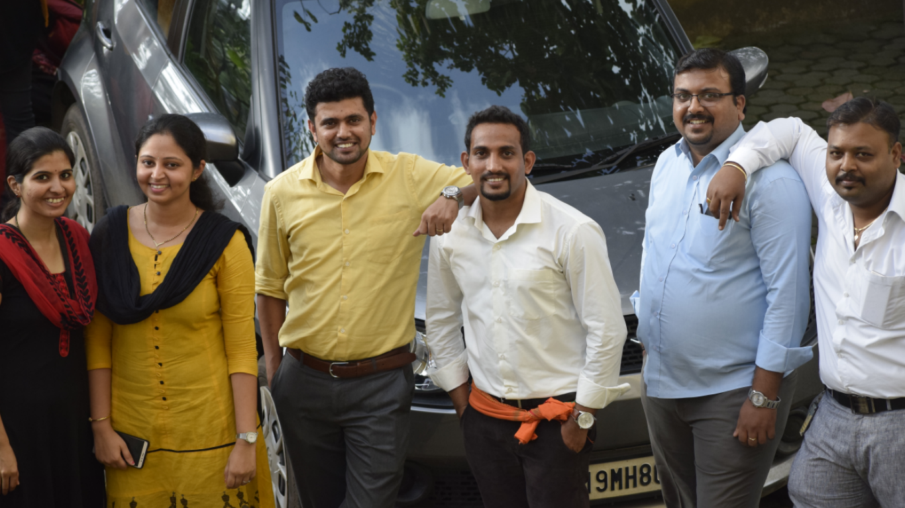
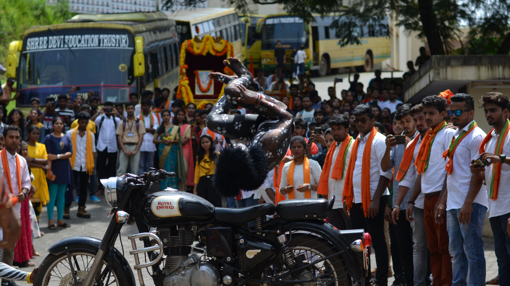

-

-

- 
-

-

-

-

-

-

- 
Janmashtami 2018, the annual Hindu festival that is celebrated around the country with much fervour, marks the birth anniversary of Lord Krishna. Also known as Krishna Janmashtami, Sri Krishna Jayanti or Gokulashtami, the festival is celebrated on Ashtami or the eight the day of the month of Krishna Paksha (the night between the new moon and the full moon) of the dark fortnight in the holy month of Shravana. In order to celebrate the birth of the Lord, who is the eighth avatar of Lord Vishnu, temples all over the country are decorated, streets are adorned with lights and delectable food stalls, devotees observe a day-long fast and processions are held.
You can find a seminars or workshops to help you develop new skills that can help you get ahead. For example, in our upcoming Training the Street Financial Modeling Workshop, attendees will learn how to use Excel, interpret data in a spreadsheet and manipulate and manage data. You will learn the best practices of using Excel to help you get ahead.
At College Days, new students and their guests are welcomed into the SDIT family. As you move through your full-day Orientation program, you will engage first-hand with the comprehensive, values-centered experience at the heart of our community. You will encounter the hospitality of the students, administrators, faculty and staff who will help you feel at home at Gannon. You will connect with faculty and peers from your academic communities. You will leave with a clear understanding of what it takes to be a successful Gannon student and will create a vision for that success.
A campus is traditionally the land on which a college or university and related institutional buildings are situated. Usually a college campus includes libraries, lecture halls, residence halls, student centers or dining halls, and park-like settings. A modern campus is a collection of buildings and grounds that belong to a given institution, either academic or non-academic.
We have beautiful collage garden specially made for students and visiters.
Student life is the happiest period in the life of a person. It is a life, free from all anxieties of the tough world. The mind of the student is full of noble ideas and his eyes are full of dreams. Student life is the most crucial period in the life of a person. The most important things in students life are discipline and punctuality without discipline students are like a bird without wings. Punctuality is the exact time to gain knowledge.
Teachers and lecturers is one who shapes up the whole life of the students through his/her knowledge, patience, love and care. These simply written essay on teacher will help your kids and children know something about his/her teacher and role of a teacher in the life of every students.
Education helps women to be more productive in her work. A knowledgeable woman has the skills, information, talent, and self-confidence that she requires to be a superior mother, employee, and resident. Women constitute almost half the population of our country. Men and Women are like two sides of the coin and need identical opportunity to contribute to the country’s development. One cannot survive without the other.

Co-education is system of educating boys and girls together. In ancient times, co-education existed in Sparta in Greece. There was no discrimination between boys and girls. They studied and played together. Along with academic education, physical training was also given. Talent cannot be measured by marks so we need to have the different measurement system which can measure the talent, skills and hidden potential of the student. Every kid is special, they all have gifted but with a different gift, the education system should provoke thought process so that students know their inclination early in the process.
A Cultural Secretary is a part of the executive body of the Student Senate. Generally, he/she looks after organizing various events in the cultural domain for the general student body thereby providing a platform for students to showcase their talent and also ensuring student engagement apart from their academic routine. He/she coordinates the activities of various student run clubs such as music club, dance club, etc which fall under the cultural council. The Cultural Secretary is also responsible towards participation of students in inter collegiate events.
A friendly teacher, as the very term suggests, acts like a friend for his/her students. A teacher-friend, in fact, combines both the guidance of a teacher and the understanding of a friend. We all, at some point of time, aspire for an understanding teacher. Such a teacher acts like our friend, philosopher and guide. If we have our teacher as our friend, we will never wander from the right path of life. every teacher should have some friendly traits in him/her. Such a teacher is more close to the students and proves to be a better educator as well.
The campus culture is a powerful source of socialization, even for commuting students. Students are socialized through their perception of the institution's norms, including peer norms, and their habitual participation in routine practices and communal events.
Students have been indulging in acts of indiscipline and rowdyism in different universities, colleges and schools. This shows that the student-power is being misused for destructive purposes. In fact, students lack proper guidance and good leadership. There is no one to tell them how they should use their energies for constructive purposes. Students played a crucial role during the pre-Independence era under the able leadership of leaders and there is no reason why they cannot play the same role in the post-Independence era for the betterment of the country and its people Every university, college and school is in the grip of student indiscipline.
India is a land of festivals. It encompasses people from different religions and cultures and thus celebrates numerous religious festivals. Indians also celebrate three national festivals. Festivals in India are awaited all year long and are celebrated with great pomp and show. The entire atmosphere is filled with joy and enthusiasm during the festive season.
Mangalore, the forth largest city of Karnataka and a municipal body, assists as the major coastal center of the state. Mangalore celebrates the traditional Indian festivals such as Dasara, Diwali, Ganesh Chaturthi, Janmashtami, Christmas, Easter, Idd, etc. with absolute pomp and enthusiasm. Adding to these popular festivals, Mangalore culture is also imbibed with various local festivals. Kodial Theru or Mangaluru Rathotsava, celebrated at Sri Venkatramana Temple is the chief festival of Goud Saraswat Brahmins.